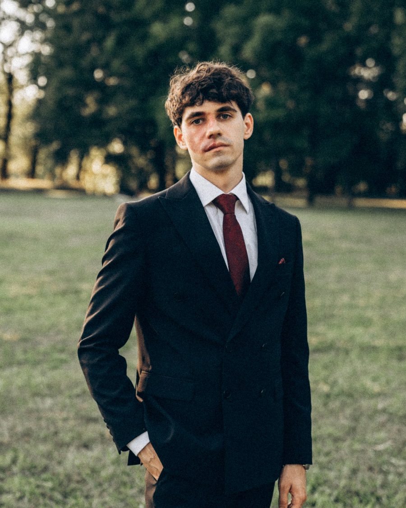

Despre noi
Suntem un proiect făcut de moldoveni, pentru moldoveni care vor să înțeleagă încotro se duc banii lor.

Am creat această platformă din dorința de a împărtăși ceea ce am învățat pe propria piele. Am fost și eu acolo — îngropat într-o datorie de peste 17.000 € și fără o direcție clară. Știu ce înseamnă să câștigi bani buni, dar la final de lună să nu-ți rămână nimic. Iar după ce am reușit să scap definitiv de datorii și să încep să investesc corect, am realizat cât de greu este să găsești informații clare, transparente și aplicabile despre educația financiară direct aici, în Moldova.
1. Cum am ajuns la 17.000 € datorie: iluzia creditelor ieftine
Pe când studiam în Danemarca, pe lângă jobul part-time, am decis să iau un împrumut studențesc datorită dobânzilor mici. Planul meu inițial era să investesc acei bani pentru a obține un profit. Însă, neavând o educație financiară structurată, am sfârșit prin a specula banii pe acțiuni riscante, criptomonede și prin a-i cheltui pe vacanțe. Fără să-mi dau seama, ajunsesem să depind de banii din credit pentru a-mi finanța stilul de viață, deși veniturile mele de bază erau suficiente.
2. Cum am scăpat de datorie în 6 luni
Când m-am întors în Moldova, am înfruntat realitatea: aveam o datorie de 127.005 DKK (aproximativ 17.000 €). Am luat o decizie fermă — trebuia să scap definitiv de această povară.
În doar 6 luni de zile, între 20 iunie și 19 decembrie 2024, am achitat integral tot creditul. Eram extrem de motivat și aveam un singur scop. Pentru a reuși:
- Am locuit cu părinții pentru a reduce cheltuielile de trai la minimum.
- Mi-am retras fondurile din pilonul de pensie (retirement) acumulat în Danemarca.
- Am lichidat toate investițiile rămase.
- Am vândut tot ce aveam de valoare — de la monitorul de la calculator, ceasurile de mână, până și din perechile de încălțăminte.
Pe 19 decembrie 2024, am achitat ultimul bănuț și am devenit liber de datorii.
3. Ce am descoperit după: zidul informațional din Moldova
Scăpat de datorii, mi-am stabilit o regulă clară: să investesc lunar între 15% și 20% din venitul net în fonduri indexate (ETF-uri). Când am încercat să aplic asta din Moldova, m-am lovit de o lipsă totală de informații locale. Majoritatea celor din jur tranzacționau doar criptomonede sau nu auziseră de fonduri indexate ori de brokeri internaționali compatibili cu țara noastră.
Principiile în care credem
Experiența fondatorului ne-a arătat ce lipsea în Moldova, așa că am creat platforma pe care ne-am fi dorit să o găsim. Scopul nostru este simplu: să te ajutăm să eviți greșelile pe care le-am făcut noi, să scapi de datorii și să-ți construiești pas cu pas independența financiară. Iată ce ne ghidează:
Scapă de datorii.
Cel care împrumută este sclavul creditorului. Datoriile ne iau libertatea de a alege, de aceea le punem pe primul loc.
Nu-ți finanța stilul de viață din credit.
Creditul nu înlocuiește veniturile. Dacă nu îți permiți ceva din banii tăi, nu îți permiți.
Cheltuiește mai puțin decât câștigi.
Nu salariul mare te face înstărit, ci diferența dintre ce câștigi și ce cheltuiești.
Plătește-te pe tine primul.
Pune deoparte o parte fixă din venit, la începutul lunii, înainte să începi să cheltuiești.
Investește simplu și pe termen lung.
Fonduri indexate (ETF-uri), nu speculații pe acțiuni riscante sau criptomonede.
Fără limbaj de lemn.
Explicăm totul clar, pe limba noastră, fără brizbrizuri financiare menite să te bage în ceață.
100% gratuit și independent.
Nu vindem cursuri, nu avem reclame și nu promovăm produse financiare îndoielnice sau credite cu dobânzi uriașe.
Practic și adaptat Moldovei.
Ghiduri transparente și actualizate despre economisire, buget, venituri și investiții accesibile de aici, din Moldova.
Confidențialitate totală.
Datele tale financiare rămân la tine. Noi îți oferim doar unelte curate ca să vezi unde se duc banii tăi.
Contactează-ne
Întrebări, probleme sau pur și simplu o părere – suntem aici pentru tine.
Ai o întrebare rapidă? Verifică mai întâi întrebările frecvente
O mare parte din nelămuriri — cum ar fi introducerea veniturilor, cheltuielile anuale sau cum funcționează regula 50-30-20 — au deja răspunsuri clare acolo.
Click aiciNu ai găsit răspunsul pe care îl căutai?
Scrie-ne direct pe rețelele de socializare sau email pentru idei de îmbunătățire, feedback, întrebări la care FAQ-ul nu a răspuns sau propuneri de colaborare de oricare fel.


Vrei o analiză detaliată a situației tale financiare?
Dacă simți că ai nevoie de un feedback personalizat și claritate pe bugetul tău, completează formularul nostru dedicat, mai jos.
Click aiciDupă completare, vom analiza datele și vom lua noi legătura cu tine.
Întrebări frecvente
Cum se calculează rezultatele?
Calculatorul scade suma tuturor cheltuielilor din venitul gospodăriei pentru a determina soldul. Pentru verificarea 50-30-20, cheltuielile sunt atribuite celor trei categorii și se calculează ponderea lor din venitul tău net.
Cum sunt definite cele trei categorii?
Nevoile sunt cheltuielile esențiale (chirie, utilități, mâncare, transport). Dorințele sunt cele care îți fac viața plăcută, dar de care te poți lipsi. Economiile sunt banii puși deoparte sau investiți.
Ce fac cu cheltuielile anuale?
Împarte suma anuală la 12 și introdu rezultatul ca cheltuială lunară, ca să ai o imagine corectă a bugetului.